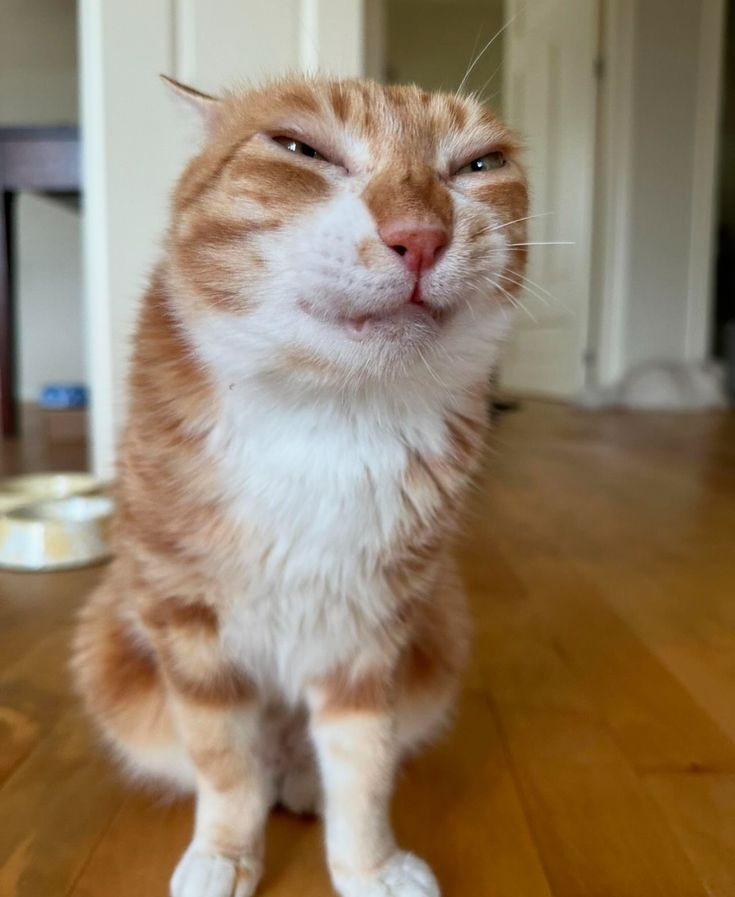

Коты факт 1
Первые представители кошачьих появились около 12 млн лет назад.
Первые представители кошачьих появились около 12 млн лет назад.

Сейчас в мире живет примерно 500 млн домашних кошек.

К «оригинальным» породам кошек можно отнести только около сорока, остальные 150+ пород были выведены искусственно путем скрещивания.